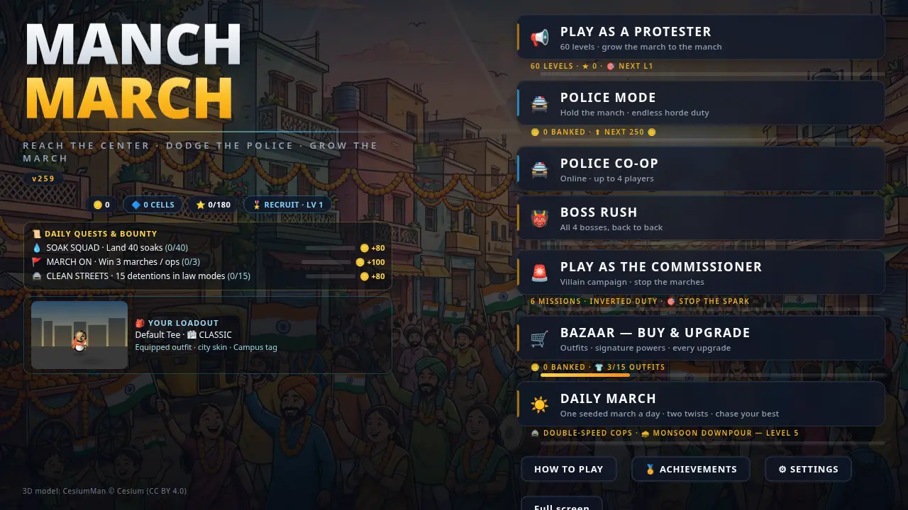

MANCH MARCH
Lead your march. Reach Kranti Maidan.
Manch March is a free 2D top-down stealth-action game. You lead a march toward the fictional Kranti Maidan while police lines try to shut it down. Your allies are your power: every ally adds strength, and losing the whole chain means the march is busted.
▶ Play Online ↓ Download Android APK Explore the Game60 Campaign Levels · Police Mode · Online Co-op · No account needed

What is in the game
📢 60 campaign levels
Level-by-level progress toward the Maidan, unlocked one by one as you clear each stage. Boss levels every 10th stage.
🚔 Police mode
Switch sides: hold the ground against endless protester waves, detain marchers, and protect Netaji on the stage.
👥 Online police co-op
Up to 4 officers in one match. Host a room, share the code, and hold the line together.
🪙 Shop and upgrades
Earn coins by playing and spend them on weapon upgrades, powers and outfits in the Bazaar.
Latest update — v260
The current release is v260, with a new app icon (the red-flag march artwork). The game itself is the v259 launch build: stages now unlock one by one from level 1, every player starts fresh with zero coins and no unlocks, police and co-op coin earnings are halved so unlocking stays earned, and the default graphics are the full-quality set (ultra particles, ultra bloom, threat outlines on). See the full history on the Updates page.
Play it now in your browser, or download the Android APK for play on the go.